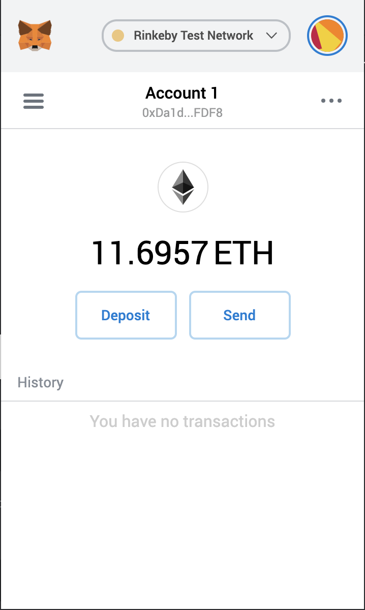

Dev Environment (Web)
- IDE - Remix
- Dapp browsers- Metamask
- Smart contract language - solidity
- Simulator - ganache-cli, hardhat node
Dev Environment (Standalone)
- IDE - Visual Studio Code
- Frameworks- Nodejs
- Smart contract language - solidity, vyper
- Test framework - Mocha/chai
- Simulator - ganache-cli
- Library - web3, ethers
- Smart contract framework - Truffle, Hardhat, Brownie
Metamask

- Ethereum Wallet plugin for chrome
- A wallet allows you to manage your crypto assets and interact with smart contracts
Create/Import Account
- Create Account
- Import Account
- Private Key
- JSON wallet file
What is a JSON Wallet File?
- It includes the encrypted private key, with information about how it was encrypted
- You can use https://www.myetherwallet.com/create-wallet to generate the wallet file
- You can use https://www.myetherwallet.com/access-my-wallet to generate the wallet file
Testnet
- Testnet is a blockchain network for testing purposes
- The following article has a good description of each testnet:
Faucets
- Faucets give testnet ether, to be used for testing
- Ropsten - https://faucet.ropsten.be/
- Rinkeby - https://faucet.rinkeby.io/
- Kovan - https://faucet.kovan.network/
- Goerli - https://goerli-faucet.slock.it/
Blockchain Explorer
- Blockchain Explorer is used to lookup a blockchain for information about account, transaction, block, ens name, etc.
Etherscan
- Is a blockchain explorer
- Mainnet : https://etherscan.io/
Details of token
https://etherscan.io/tokens
What did we observe?

Truffle framework
- Built-in smart contract compilation, linking, deployment and binary management
- Automated testing and rapid development
- Network management for deploying to any number of public and private networks
- Package management with EthPM and NPM
- Interactive console for contract communication
- Build pipeline supports tight integration
- External script runner that executes scripts within truffle environment
Truffle framework
- Creating a project
- Exploring the project
- Testing
- Compiling
- Migrating with ganache
- Interacting with contract
Truffle - directory structure
contracts/: Directory for solidity contractsmigrations/: Directory for scriptable deployment filestest/: Directory for test files for testing your application and contractstruffle-config.js: Truffle configuration file
DEMO
- Issue and verify academic certificates
Links
- Remix : https://remix.ethereum.org
- Ethereum Wallet : https://wallet.ethereum.org
- Ganache : https://www.trufflesuite.com/docs/ganache/overview
- Ganache-cli : https://github.com/trufflesuite/ganache-cli/blob/develop/README.md
Links
- Node : https://nodejs.org/en
- Visual Studio code : https://code.visualstudio.com
DEMO
- Initializing hardhat project, development and deployment of smart contract
Verify Contract
- After a contract is verified on etherscan, the source code is available and you can read or write to the contract on etherscan
- Demo for verifying a contract
Smart contract automation testing
- Testing solidity smart contract
- Writing tests in javascript, typescript and solidity
- Openzeppelin helpers, waffle, truffle
Testing solidity smart contracts
- Testing is the primary job of developer
- Little time spend writing solidity code and more utilized writing contract
TDD Overview
- Fully understand the requirement
- Create automated tests that test the requirement
- Create the coding logic -- test it by running the automated test(s)
- Once the automated test(s) pass, the coding then fulfills the requirement
- Refactor the code for better maintainability, run the automated test(s) again to ensure it still works
Functional Tests
- Unit tests : Keep units small, test single or very small groups of functions/methods or parameters at a time.
- Integration tests : Interact with external class, module or datasource.
Unit tests
- Good unit tests
- Run fast (they have short setups, run times, and breakdowns).
- Run in isolation (you should be able to reorder them).
- Use data that makes them easy to read and to understand.
- Use real data (e.g. copies of production data) when they need to.
- Represent one step towards your overall goal.
Integration tests
- Good for uncovering whether all the parts work together or not.
Test frameworks (Truffle use them under hood)
- Mocha : https://mochajs.org/ - Javascript testing framework
- Chai : https://www.chaijs.com/ - Javascript Assertion library
Hooks in Mocha
before()— Runs once before the first test case in the blockbeforeEach()— Runs before each test caseafterEach()— Runs after each test caseafter()— Runs once after the last test case in the block
- Sequence of Hooks
before() -> beforeEach() -> test() -> afterEach() -> after()
Demo
- Writing tests using Truffle
- Writing tests for Hardhat
Coverage
- Given the nature of smart contract development, where data is literal value, testing practises needs to be stringent. 100% code coverage is not maximum to aim, its must.
Achieving 100% Coverage
- Positive test
- Test that code behaves as expected when valid data is given.
- Negative tests
- Test that code behaves as expected when invalid data is given.
Solidity code coverage tools
- solidity-coverage(Truffle) - https://github.com/sc-forks/solidity-coverage
- solidity-coverage(Hardhat) - https://github.com/sc-forks/solidity-coverage/blob/master/HARDHAT_README.md